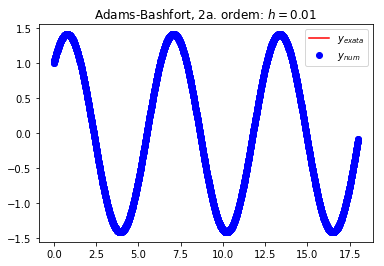

Métodos de Adams-Bashfort
24. Métodos de Adams-Bashfort#
from numpy import *
from matplotlib.pyplot import *
# Metodo de Adams-Bashfort de 2a. ordem
def adams_bashfort_2nd_order(t0,tf,y0,h,fun):
'''
Resolve o PVI y' = f(t,y), t0 <= t <= b, y(t0)=y0
usando a formula de Adams-Bashfort de ordem 2
com passo h. O metodo de Euler eh usado para
obter y1. A funcao f(t,y) deve ser definida
pelo usuario.
Saida:
A rotina AB2 retorna dois vetores, t e y,
contendo, nesta orde, os pontos nodais e
a solucao numerica.
'''
# malha numerica
n = np.round((tf - t0)/h) + 1
t = np.linspace(t0,t0+(n-1)*h,n)
y = np.zeros(n)
y[0] = y0 # condicao inicial
f1 = fun(t[0],y[0]) # f(t_i,y_i)
y[1] = y[0] + h*f1 # Euler
for i in range(2,n):
f2 = fun(t[i-1],y[i-1]) # f(t_i-1,y_i-1)
y[i] = y[i-1] + h*(3*f2 - f1)/2 # esquema AB2
f1 = f2 # atualiza
return t,y
def tab_erro_rel(t,y_n,y_e):
# erro relativo
e_r = abs(y_n - y_e)/abs(y_e)
print('i \t t \t y_ex \t y_num \t e_r')
for i in range(len(e_r)):
if i % 10 == 0:
print('{0:d} \t {1:f} \t {2:f} \t {3:f} \t {4:e} \n'.format(i,t[i],y_e[i],y_n[i],e_r[i]))
def plot_fig(t,y_n,y_e,h):
plot(t,y_e,'r-')
plot(t,y_n,'bo')
title('Adams-Bashfort, 2a. ordem: $h=' + str(h) + '$')
legend(['$y_{exata}$','$y_{num}$'])
Exemplo: Use o esquema de Adams-Bashfort de 2a. ordem para resolver o PVI.
\[\begin{split}\begin{cases}
y'(t) = -y(t) + 2 \cos(t) \\
y(0) = 1 \\
0 \le t \le 18 \\
\end{cases}\end{split}\]
Solução exata: \(y(t) = {\rm sen}(t) + \cos(t)\)
# define funcao
f = lambda t,y: -y + 2*cos(t)
# parametros
t0 = 0.0
tf = 18.0
y0 = 1.0
h = 0.5
# solucao numerica
t,y_num = adams_bashfort_2nd_order(t0,tf,y0,h,f)
# solucao exata
y_ex = sin(t) + cos(t)
plot_fig(t,y_num,y_ex,h)
tab_erro_rel(t,y_num,y_ex)
i t y_ex y_num e_r
0 0.000000 1.000000 1.000000 0.000000e+00
10 5.000000 -0.675262 -0.670163 7.550607e-03
20 10.000000 -1.383093 -1.477388 6.817733e-02
30 15.000000 -0.109400 -0.167908 5.348066e-01

h = 0.1
# solucao numerica
t,y_num = adams_bashfort_2nd_order(t0,tf,y0,h,f)
# solucao exata
y_ex = sin(t) + cos(t)
plot(t,y_ex,'r-')
plot(t,y_num,'bo')
title('Adams-Bashfort, 2a. ordem: $h=0.5$')
legend(['$y_{exata}$','$y_{num}$'])
tab_erro_rel(t,y_num,y_ex)
plot_fig(t,y_num,y_ex,h)
i t y_ex y_num e_r
0 0.000000 1.000000 1.000000 0.000000e+00
10 1.000000 1.381773 1.384518 1.986208e-03
20 2.000000 0.493151 0.491752 2.835038e-03
30 3.000000 -0.848872 -0.852907 4.752486e-03
40 4.000000 -1.410446 -1.413326 2.041670e-03
50 5.000000 -0.675262 -0.674309 1.410789e-03
60 6.000000 0.680755 0.684675 5.758689e-03
70 7.000000 1.410889 1.414177 2.330243e-03
80 8.000000 0.843858 0.843492 4.337392e-04
90 9.000000 -0.499012 -0.502694 7.379922e-03
100 10.000000 -1.383093 -1.386706 2.612468e-03
110 11.000000 -0.995565 -0.995786 2.227766e-04
120 12.000000 0.307281 0.310655 1.097903e-02
130 13.000000 1.327614 1.331481 2.913030e-03
140 14.000000 1.127345 1.128150 7.144782e-04
150 15.000000 -0.109400 -0.112397 2.739478e-02
160 16.000000 -1.245563 -1.249607 3.246745e-03
170 17.000000 -1.236561 -1.237934 1.110338e-03
180 18.000000 -0.090671 -0.088110 2.823799e-02

h = 0.01
# solucao numerica
t,y_num = adams_bashfort_2nd_order(t0,tf,y0,h,f)
# solucao exata
y_ex = sin(t) + cos(t)
plot(t,y_ex,'r-')
plot(t,y_num,'bo')
title('Adams-Bashfort, 2a. ordem: $h=0.1$')
legend(['$y_{exata}$','$y_{num}$'])
#tab_erro_rel(t,y_num,y_ex)
plot_fig(t,y_num,y_ex,h)
